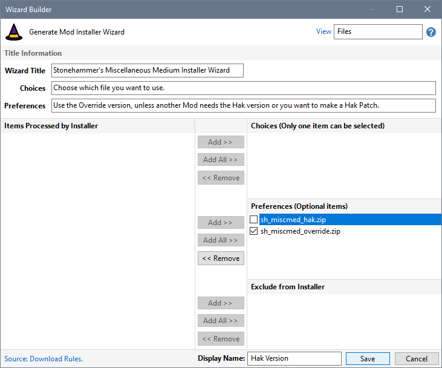
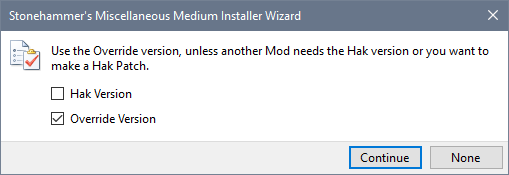

This Mod provides a Hak and an Override file that can be used. You might want to install the Hak file and create a Hak Patch instead of using the override. Alternatively, you might want to use the Override file and install the Hak because it is required by another Mod.
You can create a Wizard that uses File Preferences to accommodate the various scenarios that need to be supported.

The Create Installer process allows you to specify which file/s should be processed before the Installer is created.

Build a Wizard for the Custom Menus Mod
Build a Wizard that uses File Preferences
Build a Wizard using Archive Folders
View Create Installer Wizards results